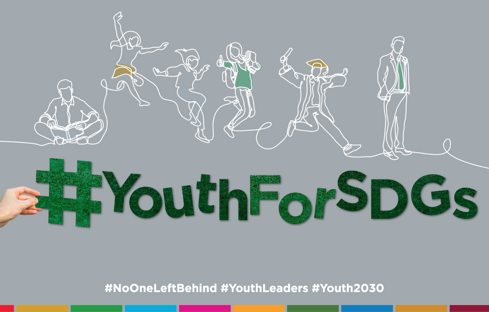
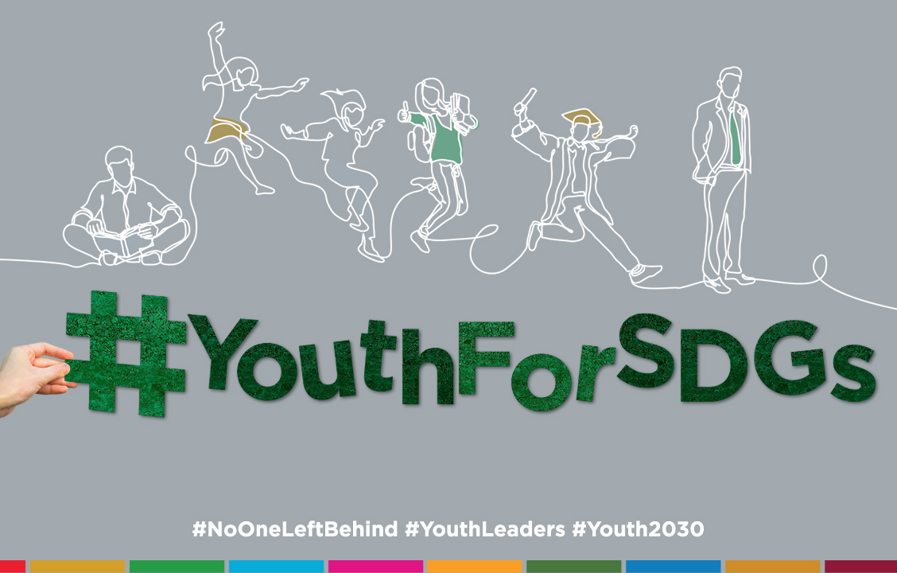

Kerjasama bilateral, regional, dan multilateral sangat mempengaruhi tujuan SDGs dalam mengakhiri kemiskinan maupun menuntaskan tujuan SDGs lainnya. Dengan adanya ketiga kerjasama ini, proses dalam menyelesaikan tujuan SDGs semakin maju. Sedikit demi sedikit tujuan ini dapat diakhiri jika kita semakin peduli terhadap dunia kita dan mengadakan kerjasama lebih banyak dalam membantu orang-orang yang masih susah. Tujuan utama adanya kerjasama adalah untuk menyelesaikan dan membantu 17 tujuan SDGs.
.
Kerjasama bilateral merupakan sebuah kerjasama yang dilakukan antar 2 negara untuk mencapai tujuan tertentu, dengan itu jika terjadi kerjasama bilateral maka itu termasuk membantu menyelesaikan permasalahan dari ke-17 tujuan SDGs. Kerjasama regional melibatkan negara-negara dalam suatu kawasan, jika terjadi kerjasama regional pastinya dalam kawasan itu mengalami sebuah tantangan yang sama. Kebanyakan dari tantangan yang dihadapi pastinya merupakan salah satu dari tujuan SDGs. Sehingga kerjasama regional dapat membantu menyelesaikan tujuan SDGs. Kerjasama multilateral melibatkan berbagai negara dari berbagai kawasan melalui sebuah organisasi atau forum.
.
Dengan kerjasama multilateral mereka dapat membantu setiap negara yang ada di dunia ini dalam menyelesaikan tujuan SDGs. Berdirinya SDGs sendiri berasal dari PBB yang berisi dengan dukungan dari berbagai negara di dunia ini. Hal ini dapat menunjukkan bahwa SDGs sendiri merupakan salah satu program berkelanjutan yang dibuat dari kerjasama multilateral sendiri. Maka dari itu, ketiga kerjasama ini sangat berpengaruh dan diperlukan untuk menyelesaikan tujuan SDGs.
.
Di dalam website program ASEAN Framework for Rural Development and Poverty Eradication (AFRDPE) yang merupakan contoh dari kerjasama regional juga sempat menyatakan bahwa kawasan ASEAN menjalin kerjasama dan berbagai program tersebut untuk memenuhi dan mendukung tujuan SDGs dalam mengakhiri kemiskinan. Sama juga seperti website Bank Dunia yang bekerjasama dengan PBB menyatakan bahwa mereka mendukung menyelesaikan tujuan SDGs dengan mengadakan berbagai program agar dapat membantu dunia ini.
.
Jika tidak ada ketiga kerjasama ini, maka tujuan untuk mencapai semua tujuan SDGs tidak dapat diselesaikan. Maka dari itu, kerjasama sangatlah penting dan dibutuhkan untuk menyelesaikan permasalahan SDGs.